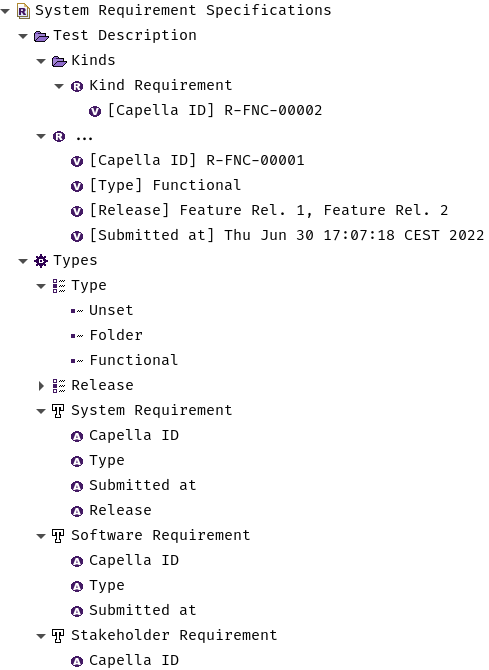

Snapshot#
The snapshot is the input needed for calculating the
ChangeSet. It consists of a metadata section and a list of
modules. The metadata documents the versions of the used RM tool and its
connector, the revision of the RM content and the Each module will be compared
against a matching
CapellaModule from the given
model. If no matching CapellaModule was found this module will be skipped.
Differences of the module snapshot and the model CapellaModule will result
in change actions according to the declarative
modelling syntax of capellambse.
Module description#
As previously noted: A module (or tracker) in the given snapshot equals a
CapellaModule in Capella. Every module consists of 4 sections:
metadata:
tool: RM Tool Version
revision: r1234
connector: RM-Bridge-Polarion vX.Y.Z
modules:
- id: MODULE-000 # mandatory
long_name: Example # optional
data_types: # Enumeration Data Type Definitions
...
requirement_types: # WorkItemTypes
...
items: # WorkItems
...
descriptionary part of the module,
data_types: For
EnumerationDataTypeDefinitions, all needed options/values forEnumerationValueAttributes,requirement_types: For
RequirementTypes and finallyitems: For the exported work items that will result into
Requirements andFolders.
The id is required and will be compared with the identifier of the
matched CapellaModule. Other attributes like long_name or text
can be declared optionally for comparison.
Enumeration Data Types (data_types)#
This section describes EnumerationDataTypeDefinitions: For now only as a
mapping from long_name to its values.
data_types: # Enumeration Data Type Definitions
type:
long_name: Type
values:
- id: unset
long_name: Unset
- id: folder
long_name: Folder
- id: functional
long_name: Functional
release:
long_name: Release
values:
- id: featureRel.1
long_name: Feature Rel. 1
- id: feature_rel.1
long_name: Feature Rel. 2
In order to have a nice display of ValueAttributes for Requirements
in Capella and also functioning .values for
EnumerationValueAttributes, AttributeDefinition
and
AttributeDefinitionEnumerations are needed. The data_types subsection maps identifiers to a
DataType. These share the same
mapping that are matched against the attribute-definitions (attributes)
subsection in Requirement Types (requirement_types).
Requirement Types (requirement_types)#
requirement_types: # WorkItemTypes
system_requirement:
long_name: System Requirement
attributes: # Field Definitions, we don't need the IDs
capellaID: # Field identifier
long_name: Capella ID # Field name
type: String # -> AttributeDefinition
type: # type should also be declared under data_types!
long_name: Type
type: Enum # -> EnumerationAttributeDefinition
submitted_at:
long_name: Submitted At
type: Date # -> AttributeDefinition
release:
long_name: Release
type: Enum
multi_values: true
software_requirement:
long_name: Software Requirement
attributes:
capellaID:
long_name: Capella ID
type: String
type:
long_name: Type
type: Enum
submitted_at:
long_name: Submitted At
type: Date
stakeholder_requirement:
long_name: Stakeholder Requirement
attributes:
capellaID:
long_name: Capella ID
type: String
Work item types are dealt by most RM tools as special fields. This section is
therefore a mapping that describes RequirementTypes from a given
identifier to its
RequirementType.
Requirements and RequirementFolders (items)#
items: # WorkItems
- id: REQ-001
long_name: Functional Requirements
text: <p>Test Description</p>
type: system_requirement # WorkItemType ID
attributes: # Fields for a Folder
capellaID: R-FNC-00001 # String Attribute
type: [unset] # Enum Attribute value identifier
submitted_at: 2022-06-30 17:07:18.664000+02:00
children: # Folder b/c children key exists
- id: REQ-002
long_name: Function Requirement
attributes: # Fields for a WorkItem
capellaID: R-FNC-00002 # String Attribute
type: [functional] # Enum Attribute value identifier
submitted_at: 2022-06-30 17:07:18.664000+02:00
# [...]
- id: REQ-003
# [...]
This section consists of all work items and folders that are exported from the
RM tool. Important keys are the id (written to identifier) and
text. The latter can also include referenced content like images using the
data-URI schema. The type field is an identifier for the respective
RequirementType and needs to also appear under Requirement Types (requirement_types).
The field data of work items is reflected by the attributes key. In general
fields are ValueAttributes in Capella. For now only the basic primitives
are supported:
IntegerValueAttribute(required as an integer value in the snapshot)StringValueAttribute(required as a string value in the snapshot)RealValueAttribute(required as a float value in the snapshot)DateValueAttribute(required as a !!timestamp value in the snapshot)BooleanValueAttribute(required as a boolean value in the snapshot)EnumerationValueAttribute(required as a sequence of strings value in the snapshot)
Note
During execution of
calculate_change()
the integrity of the snapshot is checked. That means for example work items
that have type identifiers which are not defined in the
Requirement Types (requirement_types) section will be skipped. In general there needs to
be a type identifier exported in order to have fields maintained.
Another example: If there are any options/values exported on an enum-field
which are not defined in the respective enum definition under data_types,
the field will be skipped if the force mode is enabled. If force mode is
disabled (default) any error will result into cancelation of the ChangeSet
calculation.
With the children key the hierarchical structure of the workitems is
exported. The existance of a children key will result in a Folder.
Conversely if there is no children key will cause change action on a
Requirement.
Complete snapshot#
The exemplary sections combined to one snapshot will result into the following Capella model state:
Note
The
CapellaTypesFolder
will be initially created in the EnumerationDataTypeDefinition for
compactness. Every module has its own CapellaTypesFolder named
Types with all necessary definitions.